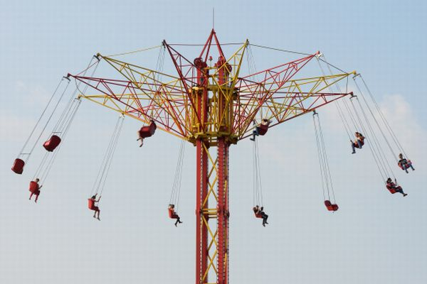
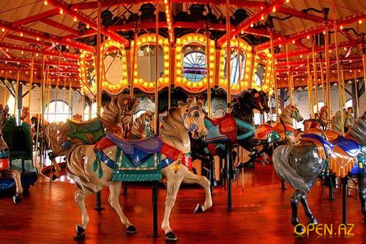
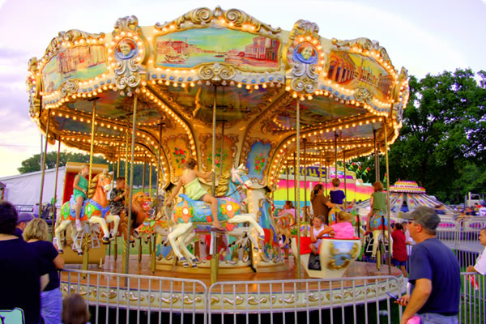
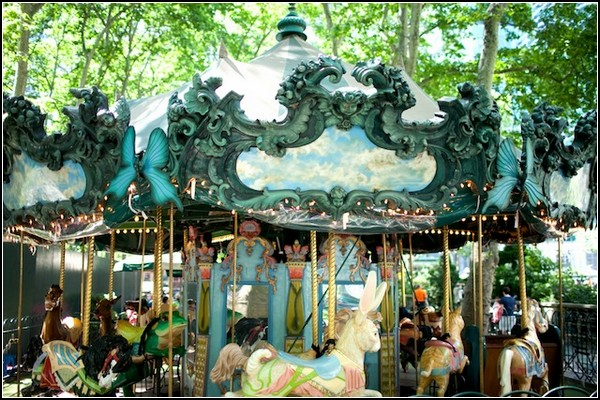
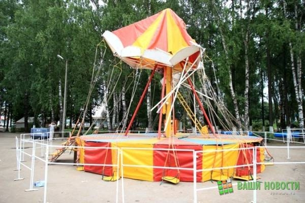
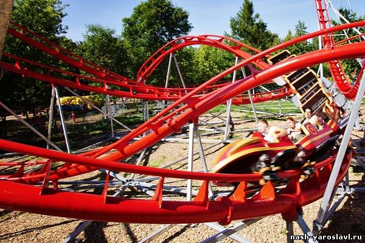

- Для перехода к следующему слайду кликните по правой части изображения, к предыдущему — по левой (нормальный
интерфейс можно отдельно прикрутить :)
- Ручной переход к следующему/предыдущему слайду выключает автоскролл слайдов
- Автоскролл в обратном направлении и произвольная навигация будут добавлены в следующей версии :)
(
)
(
)





